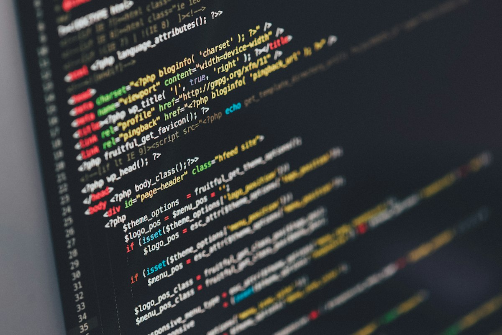

VidFlow
microservices video platformA NestJS gateway and a Go transcoding worker connected with gRPC and a Redis queue.
// portfolio
Computer Science student at Galala University. I build scalable backends, event-driven systems and interfaces that stay out of the way.

// about
I'm a full-stack developer and Computer Science student. My favourite problems sit between backend architecture and product experience.
I have built a microservices video platform and a constraint-programming scheduler. I care about clean APIs and maintainable code.
// work
// writing
I'm open to internships, freelance projects and backend architecture conversations.
Contact me